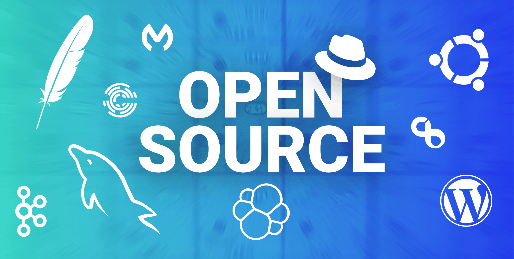
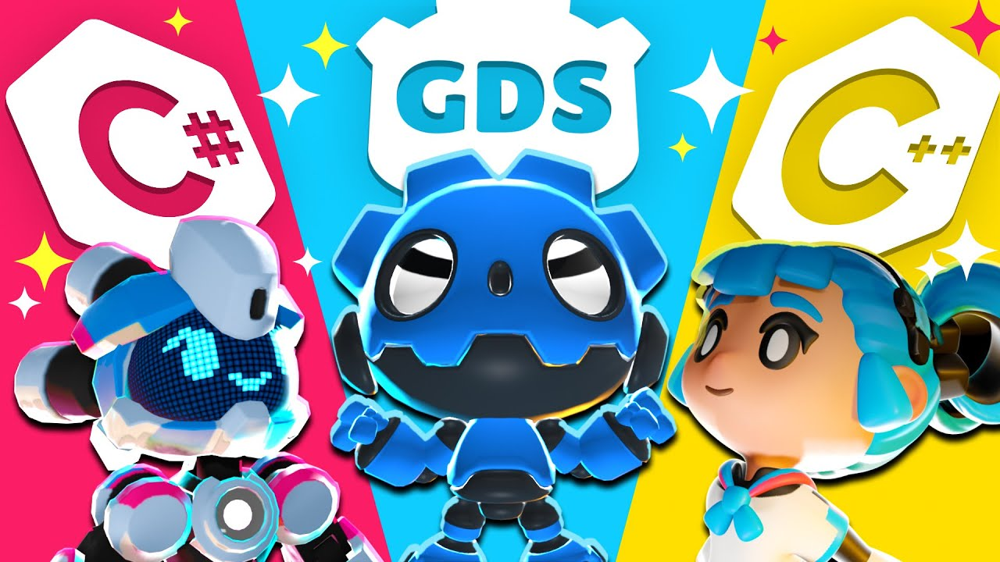
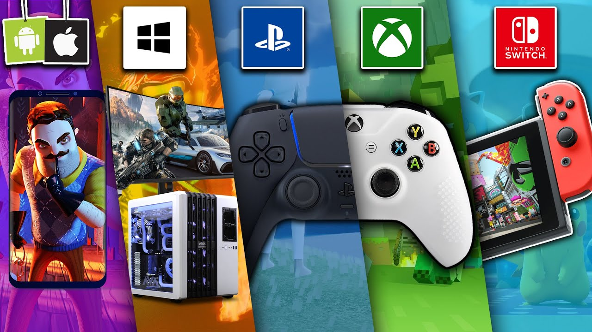

Godot

C'est quoi Godot ?
Gratuit et Open Source
Godot est un moteur de jeu open source et entièrement gratuit, ce qui en fait un outil précieux pour les développeurs, qu'ils soient débutants ou expérimentés. Contrairement à de nombreux autres moteurs de jeu, Godot ne nécessite aucun coût de licence, vous permettant de créer et de publier vos projets sans limitations financières. Son code source étant accessible à tous, la communauté peut contribuer activement à son amélioration, garantissant une évolution constante et transparente. Cette philosophie open source favorise l'innovation, le partage de connaissances et offre une flexibilité inégalée pour adapter le moteur à vos besoins spécifiques. Avec Godot, la liberté créative n’a jamais été aussi accessible !
C#, C++, GDScript et plus
Godot supporte plusieurs langages de programmation, offrant ainsi une flexibilité inégalée pour répondre aux préférences et aux besoins des développeurs. Son langage natif, GDScript , est spécialement conçu pour être simple, intuitif et parfaitement intégré au moteur, permettant un développement rapide et fluide. Pour ceux qui préfèrent des langages plus robustes, Godot propose également une prise en charge de C# , idéal pour les développeurs habitués à l'écosystème .NET, ainsi que la possibilité d'utiliser C++ via des modules ou des extensions pour des performances optimisées. Que vous soyez à l'aise avec un langage spécifique ou désireux d'explorer de nouvelles options, Godot s'adapte à votre style et vous offre les outils nécessaires pour donner vie à vos projets, quel que soit leur niveau de complexité.
Multiplatforme
Godot se distingue par sa capacité à créer des jeux et applications multiplateformes de manière simple et efficace. Grâce à son architecture flexible, vous pouvez exporter vos projets vers une large gamme de plateformes, y compris Windows , macOS , Linux , Android , iOS , et même le Web via HTML5, le tout depuis une seule base de code. Cette polyvalence permet aux développeurs d'atteindre un public diversifié sans avoir à réécrire ou adapter leur code de manière complexe. Que vous cibliez des joueurs sur ordinateur, mobile ou navigateur, Godot simplifie le processus de publication tout en garantissant des performances optimales. Avec cette approche multiplateforme, Godot s'impose comme un outil incontournable pour les créateurs souhaitant maximiser l'accessibilité et l'impact de leurs projets.